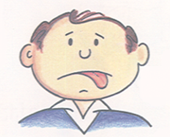

Balans tekućine
Što se sve podrazumijeva pod nazivom “tekućina”?
Najčešći simptomi nakupljanja tekućine:
U slučaju nakupljanja tekućine:
Najčešći simptomi dehidracije:

U slučaju dehidracije:
Vaganje bolesnika
Vaganje je POTREBNO, svaki dan ujutro, nakon izmjene
Važu se (otprilike) u istoj odjeći, primjerice, u piđami
Preporuka za bolesnike; da im vaganje bude mjera za unos tekućine za taj dan, tj. da pokušaju održati ciljnu tjelesnu težinu
Vagu treba uvijek držati na ISTOM mjestu
Važno za upute bolesnicima
Koristiti propisanu otopinu za PD
AKO NISU SIGURNI, NEKA NAZOVU SVOJ DIJALIZNI CENTAR, „JOKER – ZOVI”